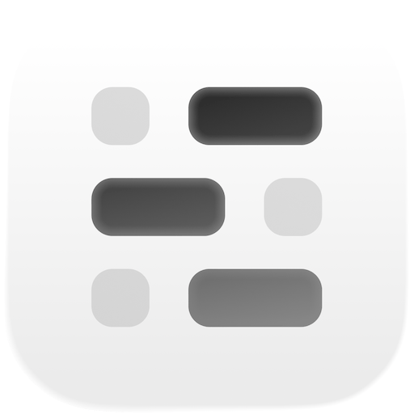
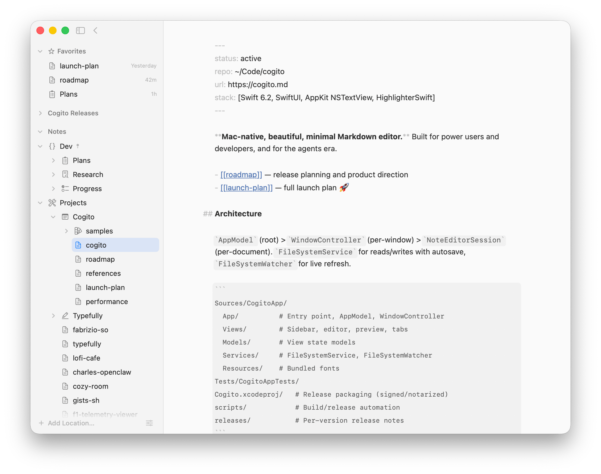
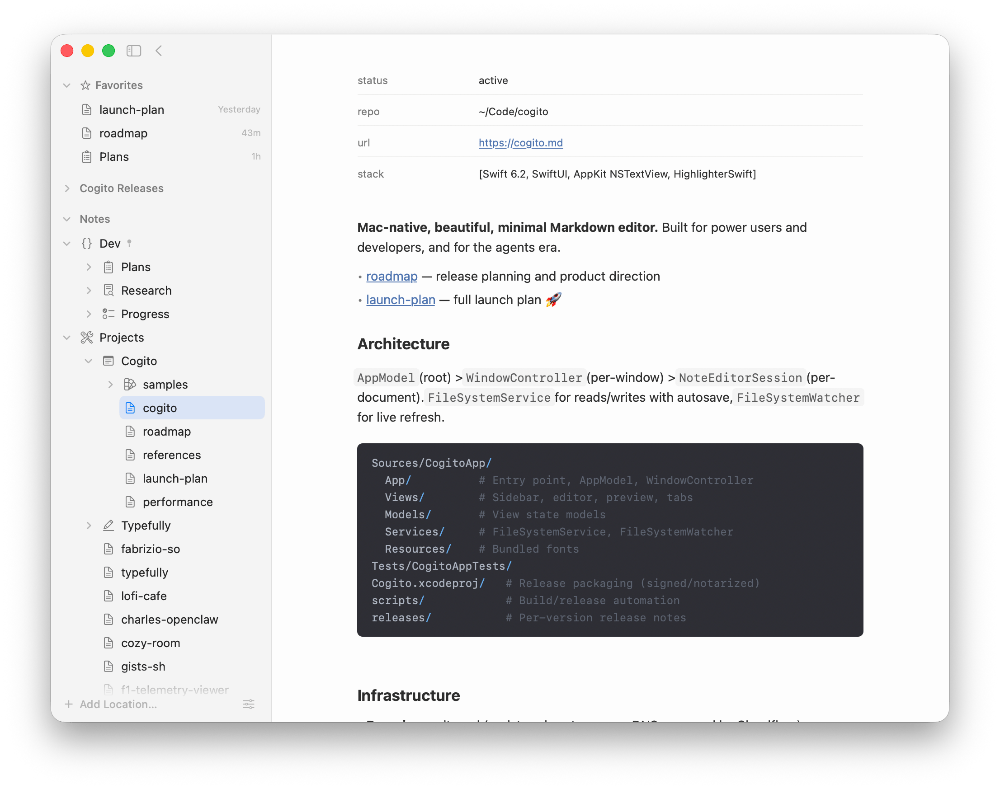
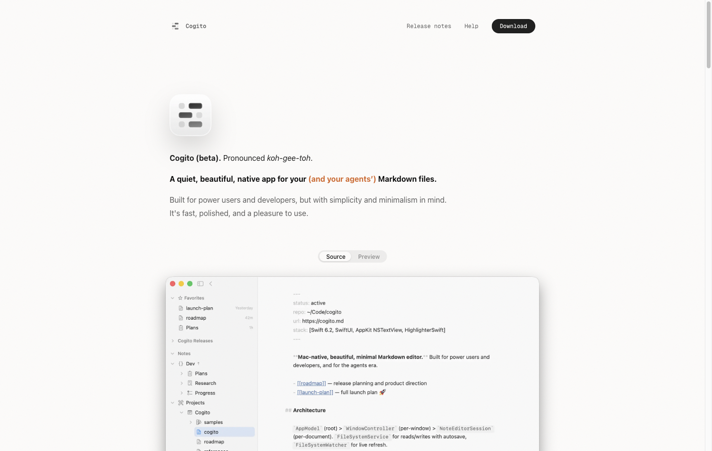
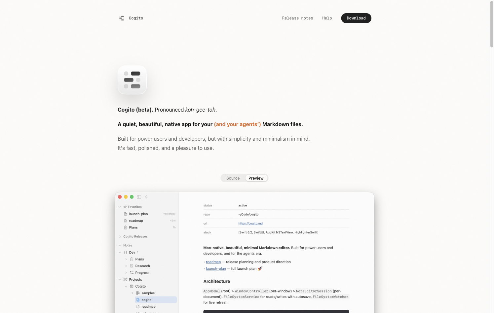

标题与正文同为 16px。Source / Preview 切换同一份 Markdown，而不是并排两张产品图。

Cogito (beta). Pronounced koh-gee-toh.
Built for power users and developers, but with simplicity and minimalism in mind. It's fast, polished, and a pleasure to use.


原站第一屏由四层组成：88px 应用图标、三行 16px / 28px 的文字、Source / Preview 分段控件，以及一扇裁去下沿的 macOS 窗口。标题中只有 (and your agents’) 使用强调色 #d9621a。
切换到 Preview 时，分段滑块用 200ms 移到右侧。窗口内仍是同一份笔记：YAML 前页渲染为表格，Markdown 标题去掉标记符号，侧栏选中项不变。

窗口不是三维模型，而是导出的 PNG（2212 × 1746）。显示框高度为宽度的 64.5%，超出部分由 overflow 裁切；底边一条 1px 渐变线提示窗口仍向下延伸。
源码与预览叠在同一容器中，而不是并排两张图。切换时图片瞬间替换，不做淡入；过渡只作用在分段滑块上。
层级不靠放大标题。标题、读音行、正文同为 16px / 28px。区别来自字重（700 / 400）和颜色（#0a0a0a / #5c5c5c），外加一处 #d9621a。
Source / Preview 不是浅色与深色主题切换，而是同一文件的源码视图与预览视图。

过渡关闭后，滑块立即到位，图片仍为瞬间替换。原站的 duration-200 ease-out 只作用在分段滑块上，不作用在图片。
裁切关闭后，取消 64.5% 比例框，显示完整 PNG。原图拍摄了完整窗口，页面再按比例裁切。
降对比关闭后，正文与标题同为 #0a0a0a。没有灰色，标题不再构成层级。
强调色关闭后，(and your agents’) 回到黑色。这是全屏唯一的 accent。
| 项目 | 取值 |
|---|---|
| canvas | #fdfcfb |
| ink / strong / soft / muted | #1c1c1c / #0a0a0a / #5c5c5c / #858585 |
| accent-vivid | #d9621a |
| 标题与正文 | 16px / 28px，栏宽 630px，字重 700 / 400 |
| 图标 | 桌面 88px（size-22），窄屏 72px；drop-shadow 0 25px 25px #00000026 |
| 分段控件 | 145 × 26，内边距 3px，12px Medium，过渡 200ms cubic-bezier(0, 0, .2, 1) |
| 窗口 | 1495 视口下宽 872px（48rem + 两侧 13 间距）；高 = 宽 × 0.645 |
| 图像 | hero-source-light / hero-preview-light，原文件 2212 × 1746 |
#copy#0a0a0a；正文 400、#5c5c5c。读音行同号。标题中 (and your agents’) 使用不换行空格与 #d9621a，为全屏唯一 accent。#swapcubic-bezier(0, 0, .2, 1)。两张 PNG（2212×1746）叠在同一容器：未选中层 absolute inset-0 opacity-0，图片无淡入。显示框 padding-bottom: 64.5%；1495 视口下宽 872px。底边 1px linear-gradient 使用 --rule-strong。